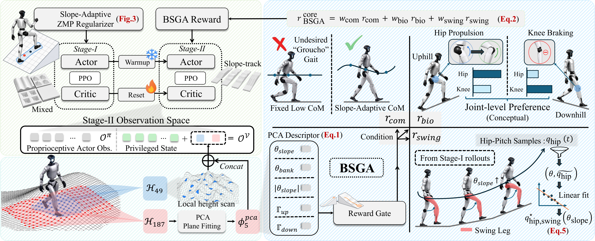
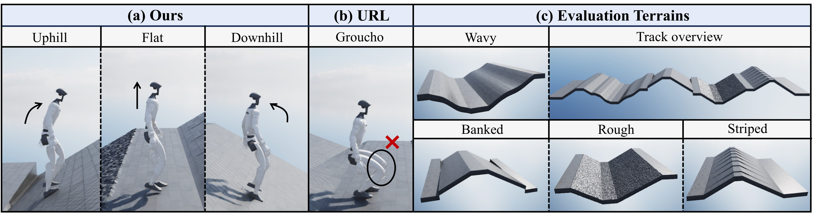
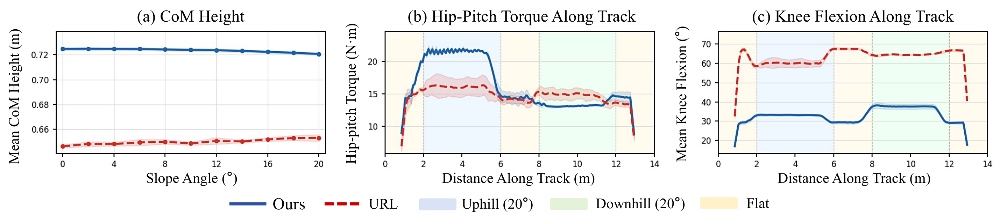

Stage I
Slope-Adaptive ZMP Regularization
A terrain-aligned ZMP reward learns a dynamic balance prior that adapts to the local slope.
HumoSlope
A two-stage reinforcement learning framework for robust, proprioception-only humanoid locomotion across extreme and complex slopes.
Model-free reinforcement learning has enabled impressive humanoid locomotion; however, control on steep slopes remains largely unexplored. Unlike flat or discrete terrains, sloped terrains impose a persistent gravitational bias that demands simultaneous stability and posture control. Consequently, under generic reward formulations, policies can converge to slow, conservative low-center-of-mass (CoM) crouched gaits. In this work, we propose a novel two-stage physics-guided framework, dubbed HumoSlope, dedicated to robust humanoid locomotion on diverse sloped terrains. Specifically, Stage I establishes a terrain-consistent balance prior by introducing a slope-adaptive Zero Moment Point (ZMP) regularizer evaluated directly on the local inclined support plane rather than a world-horizontal reference. To prevent the resulting policy from defaulting to a crouched posture, Stage II introduces the Biomechanical Slope Gait Adapter (BSGA). Utilizing extracted macroscopic terrain descriptors as privileged, training-only signals, BSGA dynamically gates soft reward priors to modulate CoM height and lower-limb coordination based on the estimated slope geometry—encouraging hip-dominant uphill propulsion and knee-oriented downhill braking. Crucially, the deployed actor remains entirely proprioceptive, requiring no online exteroceptive sensing. Extensive Sim-to-Real experiments demonstrate that our framework effectively mitigates posture degeneration and enables blind, continuous traversal of outdoor grass slopes up to 62.7% (32.1°), validating a physics-guided approach to challenging slope terrain adaptation.

Stage I
A terrain-aligned ZMP reward learns a dynamic balance prior that adapts to the local slope.
Stage II
Training-time PCA terrain descriptors guide CoM height, uphill hip propulsion, downhill knee braking, and swing-leg motion through soft rewards.
Deployment
The terrain descriptor is removed. The final policy acts from onboard proprioceptive observations alone.
Compound Slope Tracks

| Method | Input | 0% (0°) | 17.6% (10°) | 36.4% (20°) | 57.7% (30°) | Max Grade ↑ | ||||||||
|---|---|---|---|---|---|---|---|---|---|---|---|---|---|---|
| SR ↑ | MXD ↑ | Ttrav ↓ | SR ↑ | MXD ↑ | Ttrav ↓ | SR ↑ | MXD ↑ | Ttrav ↓ | SR ↑ | MXD ↑ | Ttrav ↓ | |||
| URL | Prop. | 99.7 | 32.13 | 88.0 | 97.7 | 31.66 | 92.7 | 37.5 | 17.94 | 99.4 | 0.0 | 2.18 | — | 47% (25°) |
| FastTD3 | Prop. | 100.0 | 31.50 | 76.1 | 100.0 | 31.49 | 73.2 | 77.3 | 28.32 | 87.5 | 0.0 | 2.02 | — | 70% (35°) |
| Gallant | LiDAR | 99.7 | 31.47 | 51.9 | 90.7 | 30.29 | 53.5 | 78.9 | 28.37 | 54.6 | 0.0 | 6.11 | — | 60% (31°) |
| Ours | Prop. | 100.0 | 32.19 | 44.3 | 100.0 | 32.19 | 47.0 | 100.0 | 32.18 | 48.6 | 77.1 | 27.54 | 62.8 | 73% (36°) |
SR (%), MXD (m), and Ttrav (s) are averaged over three checkpoints and three friction tiers.
We evaluate HumoSlope on held-out 35 m compound slope tracks with diverse terrain variations. HumoSlope achieves 100% success up to 20° and 77.1% success at 30°, where all baselines fail to complete the track. A separate slope-limit evaluation demonstrates traversal at 36°.
CoM Height · Hip-Pitch Torque · Knee Flexion

HumoSlope maintains a more upright posture than the URL baseline, avoiding persistent low-CoM crouching. It exhibits increased hip-pitch torque during ascent and greater knee flexion during descent, demonstrating slope-conditioned gait adaptation.
| Variant | Task Performance | Efficiency / Stability | Posture / Load | ||||
|---|---|---|---|---|---|---|---|
| SR ↑ | MXD ↑ | Ttrav ↓ | CoT ↓ | σ2yaw ↓ | h̄com | τpkknee | |
| Full | 98.2 | 31.75 | 53.7 | 1.380 | 0.1008 | 0.669 | 117.9 |
| Stage I only (no Stage II) | 100.0 | 32.20 | 67.6 | 0.925 | 0.0148 | 0.535 | 82.9 |
| w/o slope-adaptive ZMP | 55.6 | 22.08 | 54.1 | 1.906 | 0.3048 | 0.720 | 115.5 |
| w/o BSGA critic cue | 93.2 | 30.56 | 74.1 | 1.676 | 0.2009 | 0.727 | 83.4 |
| w/o BSGA reward priors | 26.9 | 18.09 | 71.9 | 1.603 | 0.2031 | 0.722 | 108.9 |
| w/o BSGA | 0.0 | 9.59 | — | 1.621 | 0.3133 | 0.659 | 136.4 |
Stage I establishes a strong stability prior, while Stage II improves traversal speed and posture adaptation. Removing slope-adaptive ZMP or BSGA components substantially degrades performance, confirming their complementary contributions.
Use the arXiv citation below. The entry will be updated when the official CoRL record becomes available.
@article{chen2026physics,
title={Physics-Guided Biomechanical Gait Adaptation for Humanoid Locomotion on Extreme Sloped Terrains},
author={Chen, Xuanyu and Liu, Mohan and Mei, Dengchen and Gu, Zhihao and Zhang, Haitian and Mao, Kaimin and Zhu, Haiyue and Yan, Shijun and Wang, Lin},
journal={arXiv preprint arXiv:2607.07830},
year={2026},
doi={10.48550/arXiv.2607.07830},
url={https://arxiv.org/abs/2607.07830}
}